Currently if you want to use controls like Button or ComboBox in HTML5 you have the HTML5 elements to use and place on your web page. These controls that come free with HTML5 are limited in the extent to which they can be made fancy or as in ComboBox if you wanted the text and dropdown list to contain images for backgrounds or complex controls you would find this to be quite hard. Another new element that has been introduced in HTML5 is the canvas element. This element allows for drawing whatever you want on it using JavaScript. The current situation though is there are no controls you can use that are available that are purely based on the canvas. To plug this gap I have created a Canvas Control Library with all the common controls and advanced ones like TreeView which due to the nature of canvas allow for great control over the graphical presentation of the controls and their item contents. So in the case of the ComboBox example with my Canvas Control Libraries ComboBox adding images to the background of the text area and list drop down is quite easy. Also animated graphing and charting controls have been ported to first class Canvas Control Library controls.
The code for the JavaScript is downloadable from GitHub repository link for Canvas Control Library . Examples for ASP.NET are available currently in the same GitHub repository.
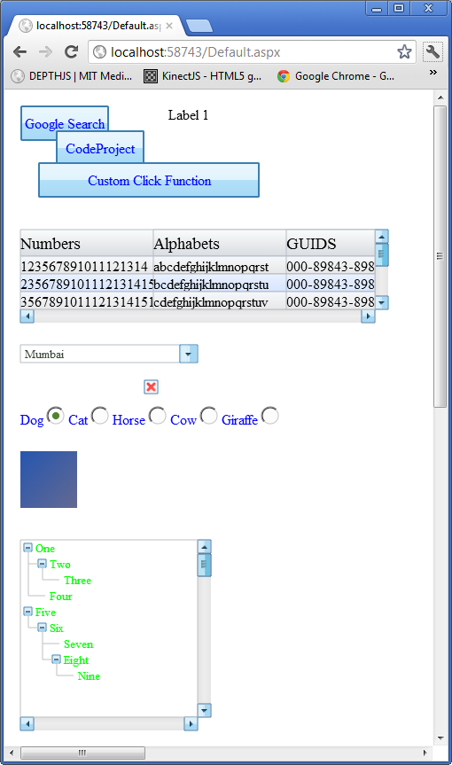
Label Control :
The simplest element is Label control and to add a label to your canvas you would make the following JavaScript call from your web page after the canvas element on which you mean to draw the label as follows:
createLabel('canvas1', 150, 50, 100, 20, 'Label 1', '#000000', 12, '12pt Ariel', null, highestDepth); The basic function call for creating a label is:
createLabel(canvasid, x, y, width, height, text, textColor, textHeight, textFontString, drawFunction, depth, isHyperlink, url, nobrowserhistory, isnewbrowserwindow, nameofnewbrowserwindow, widthofnewbrowserwindow, heightofnewbrowserwindow, newbrowserwindowisresizable, newbrowserwindowhasscrollbars, newbrowserwindowhastoolbar, newbrowserwindowhaslocationorurloraddressbox, newbroserwindowhasdirectoriesorextrabuttons, newbrowserwindowhasstatusbar, newbrowserwindowhasmenubar, newbrowserwindowcopyhistory)
So what this means is that the id of the canvas for example "canvas1" is passed in which is the canvas on which you want to draw is the first parameter to the function call. The second and third parameters x, y is the point location of the top left corner of the label you want to draw at on the canvas. The width and the height of the label. The text parameter is the text you want to display for the label in this case the label when drawn will display text Label 1 at location 150, 50 on the canvas1 canvas. The
textColor is the color of the text you want drawn. The textHeight is essentially the same as the textFontString font point value which in this case is 12 as we are using 12 point Ariel font for drawing the label text. The
drawFunction is an override so that if you wanted to draw something custom you could supply your own
JavaScript canvas drawing code to draw the label in any custom way you like. The depth value is the layer on which the control will be drawn and normally you want to use the
highestDepth variable value which is defined and maintained in the Canvas Control Libraries internal
JavaScript code. You can also make the label into a hyperlink and supply the parameters. Look at button examples which provide using the extra hyperlink parameters.
Button Control :
To add a button to your canvas you would make the following JavaScript call from your web page after the canvas element on which you mean to draw the button as follows:
createButton(elemId, 10, 10, 100, 40, 'Google Search', '#0000FF', 12, '12pt Ariel', 2, highestDepth, null, null, '#bee6fd', '#a7d9f5', '#eaf6fd', '#d9f0fc', '#3c7fb1', 1, 'http://www.google.com', 1);createButton(elemId, 50, 38, 100, 40, 'CodeProject', '#0000FF', 12, '12pt Ariel', 2, highestDepth + 1, null, null, '#bee6fd', '#a7d9f5', '#eaf6fd', '#d9f0fc', '#3c7fb1', 1, 'http://www.codeproject.com', 0, 1, 'CodeProject', '600', '400', 'no', 'no', 'no', 'no', 'no', 'no', 'no', 'no');createButton(elemId, 30, 74, 250, 40, 'Custom Click Function', '#0000FF', 12, '12pt Ariel', 2, highestDepth + 1, function (canvasid, windowid) { alert('You clicked the button executing some custom code!!'); }, null, '#bee6fd', '#a7d9f5', '#eaf6fd', '#d9f0fc', '#3c7fb1');
The basic function call for creating a button is:
createButton(canvasid, x, y, width, height, text, textColor, textHeight, textFontString, edgeRadius, depth, clickFunction, drawFunction, bottomColorStart, bottomColorEnd, topColorStart, topColorEnd, borderColor, isHyperlink, url, nobrowserhistory, isnewbrowserwindow, nameofnewbrowserwindow, widthofnewbrowserwindow, heightofnewbrowserwindow, newbrowserwindowisresizable, newbrowserwindowhasscrollbars, newbrowserwindowhastoolbar, newbrowserwindowhaslocationorurloraddressbox, newbroserwindowhasdirectoriesorextrabuttons, newbrowserwindowhasstatusbar, newbrowserwindowhasmenubar, newbrowserwindowcopyhistory)
The first example will draw a button on canvas1 at 10, 10 with a width of 100 pixels and a height of 40 pixels with blue 12 pt Ariel font button label text Google Search. The only new thing is that when you click the button you go the URL provided www.google.com. We do not provide a custom drawing
JavaScript function so we set the drawFunction parameter to null. The parameters bottomColorStart, bottomColorEnd, topColorStart and topColorEnd define the bottom half gradient and top half gradient of the background of the button. The borderColor parameter draws the border line in that color. When isnewbrowserwindow is set to 1 as in the second example you provide all the parameters to customize the new browser window to display the URL in the case of second example www.codeproject.com. In the third example you don't use hyperlinks so you don't provide any of those parameters and just provide a custom javascript click function to do custom logic in the case of the example it pops up an alert box.
Grid/ListBox Control :
To add a grid to your canvas you would make the following JavaScript call from your web page after the canvas element on which you mean to draw the grid as follows:
createGrid(elemId, 10, 150, 400, 90, highestDepth, [['123567891011121314', 'abcdefghijklmnopqrst', '000-89843-8983459'],
['2356789101112131415', 'bcdefghijklmnopqrstu', '000-89843-8983459'],
['35678910111213141516', 'cdefghijklmnopqrstuv', '000-89843-8983459'],
['45678910111213141516','defghijklmnopqrstuv', '000-89843-8983459'],
['5678910111213141516', 'efghijklmnopqrstuv', '000-89843-8983459'],
['678910111213141516', 'fghijklmnopqrstuv', '000-89843-8983459']],
['Numbers', 'Alphabets', 'GUIDS'], '#000000', 12, '12pt Ariel', '#000000',
14, '14pt Ariel', null, null, function (canvasid, windowid, c, r) { alert('you clicked cell number ' +
c + ' at row number ' + r); }, 20, 30, [150, 150, 200], 1, '#b7bfc8', 1,
'#fbfbfb', '#d9dde1', '#f6f8fb', '#e7e7e7', '#eaf1ff', '#d7e5ff');
The basic function call for creating a grid is:
createGrid(canvasid, x, y, width, height, depth, rowData, headerData, rowDataTextColor, rowDataTextHeight, rowDataTextFontString, headerDataTextColor, headerDataTextHeight, headerDataTextFontString, drawRowDataCellFunction, drawHeaderCellFunction, cellClickFunction, dataRowHeight, headerRowHeight, columnWidthArray, hasBorder, borderColor, borderLineWidth, headerbackgroundstartcolor, headerbackgroundendcolor, altrowbgcolorstart1, altrowbgcolorend1, altrowbgcolorstart2, altrowbgcolorend2)
In the createGrid function one of the new parameters is rowData which is simply an array which contains an array for each row which contains the cell text to draw for each cell. The next array
headerData is an array containing the header cell text to draw for each header row. One of the advantages is that the header row stays put on scrolling the contents of the grid and only the rowData contents rows and cells that is scroll. You can custom draw the cell contents by passing in a
JavaScript function which draws them for the drawRowDataCellFunction which in the examples case we use the default drawing method supplied by passing in null. You can do the same for drawing the header cells which in the examples case is null so default drawing method will be used. I have supplied a
cellClickFunction which simply pops up a message box informing you which cell at which row you clicked on the grid but you can change this of course to do whatever complex business or game logic you need. The
dataRowHeight is the height of each row which has to be uniform and fixed and in the example is set to 20 pixels. Same for the header row height which is set to 30 pixels. The
columnWidthArray allows you to pass in an array containing the width's of all the columns in your grid. The rest of the three parameters concern how to draw the border of the grid. The last 6 parameters are all used to gradient paint the header and alternate row backgrounds.
In the case of a ListBox all you have to do is create a grid with only 1 column. That is why I have not provided a separate control for ListBox.
ComboBox Control
To add a ComboBox to your canvas you would make the following JavaScript call from your web page after the canvas element on which you mean to draw the ComboBox as follows:
createComboBox(elemId, 10, 10, 100, 15, highestDepth, ['Mumbai','Pune','Juhu','Phoenix','London','New York','San Fransisco','Los Angeles','Houston','Boston'], null, null, null, null, '#FF0000', 10, '10pt Ariel', '#00FF00', 10, '10pt Ariel');
The basic function call for create ComboBox is:
createComboBox(canvasid, x, y, width, height, depth, data, drawTextAreaFunction, drawButtonFunction, drawListAreaFunction, listAreaClickFunction, textAreaTextColor, textAreaTextHeight, textAreaFontString, listAreaTextColor, listAreaTextHeight, listAreaFontString)
The data parameter is an array containing the list of strings to display in the dropdown list area. Some of the new parameters here are
drawTextAreaFunction, drawButtonFunction, drawListAreaFunction which are all passed in as null in the example using default drawing capabilities. You can override these to completely customize the drawing of the ComboBox.
CheckBox Control
To add a CheckBox to your canvas you would make the following JavaScript call from your web page after the canvas element on which you mean to draw the CheckBox as follows:
createCheckbox(elemId, 50, 250, highestDepth, 0);
The basic function call for creating a CheckBox is:
createCheckbox(canvasid, x, y, depth, status)
In this case the new parameter is status which is 1 for checked and 0 for not checked.
Radio Button Group Control :
To add a Radio Button Group to your canvas you would make the following JavaScript call from your web page after the canvas element on which you mean to draw the Radio Button Group as follows:
createRadioButtonGroup(elemId, 300, 20, 0, highestDepth, 'test1', ['Dog', 'Cat', 'Horse', 'Cow', 'Giraffe'], 0, '#0000FF', '12pt Ariel');
The basic function call for creating a Radio Button Group is:
createRadioButtonGroup(canvasid, x, y, alignment, depth, groupname, labels, selectedid, labelTextColor, labelFontString)
Some of the new parameters are alignment which is right now only possible to set it to 0 and is ignored in the code and will draw the radio buttons in a horizontal line. Later on you will be set it to 1 and have it draw the radio buttons vertically stacked. The
groupname parameter is the name of the radio button group for easy identification and is test1 in the example. The labels parameter is an array containing the labels text for each radio button and will be drawn in the order supplied. The
selectedid parameter is the index into the array to start with that is selected.
Image Control :
To add an Image to your canvas you would make the following JavaScript call from your web page after the canvas element on which you mean to draw the Image as follows:
createImage(elemId, 100, 400, 64, 64, highestDepth, 'test.png', function (canvasid, windowid) { alert('You clicked the image'); });
The basic function call for creating a Image is:
createImage(canvasid, x, y, width, height, depth, imgurl, clickFunction, isHyperlink,url,
nobrowserhistory, isnewbrowserwindow, nameofnewbrowserwindow, widthofnewbrowserwindow, heightofnewbrowserwindow,
newbrowserwindowisresizable, newbrowserwindowhasscrollbars, newbrowserwindowhastoolbar,
newbrowserwindowhaslocationorurloraddressbox, newbroserwindowhasdirectoriesorextrabuttons,
newbrowserwindowhasstatusbar, newbrowserwindowhasmenubar, newbrowserwindowcopyhistory)
The new parameters here is the imgurl which as it suggests is the URL link path to the image to draw and
clickFunction is the function to be executed when the image is clicked which in the case of the example pops up a message 'You clicked the image'. Again this image like button and label can be turned into hyperlinks. Look at button for a description of how to specify the optional parameters.
TreeView Control :
To add an TreeView to your canvas you would make the following JavaScript call from your web page after the canvas element on which you mean to draw the TreeView as follows:
createTreeView(elemId, 800, 100, 200, 200, highestDepth, [[1, 0, 'One', 1],
[2, 1, 'Two', 1], [3, 2, 'Three', 1], [4, 1, 'Four', 1], [5, 0, 'Five', 1],
[6, 5, 'Six', 1], [7, 6, 'Seven', 1], [8, 6, 'Eight', 1], [9, 8, 'Nine', 1]],
0, 1, 3, 2, '#00FF00', '10pt Ariel', 10,
function (canvasid, windowid, selectedNodeIndex) { alert(selectedNodeIndex); });
The basic function call for creating a TreeView is:
createTreeView(canvasid, x, y, width, height, depth, data, idcolindex, parentidcolindex, expandedcolindex, labelcolindex, textcolor, textfontstring, textheight, clickNodeFunction)
The data parameter is an array of arrays containing the node information. The first element in the node array is the index of the array which starts from
1 as 0 is reserved for a root node parent. The second element is the parent node id which in the case of root nodes is 0.
The third element is the label for the node the text to draw for the node. The fourth element is whether the node is expanded 1
or collapsed 0. In the example I have chosen this order actually you can have a different order and supply it in the idcolindex which
tells the index into the node array at which the id column is which in my case is 0. The same goes for
parentidcolindex, labelcolindex,
and expandedcolindex. The clickNodeFunction is the
JavaScript function to execute when a node is clicked which in the case of the example just pops up a message giving the id col index value of the node.
ProgressBar Control :
To add an ProgressBar to your canvas you would make the following JavaScript call from your web page after the canvas element on which you mean to draw the ProgressBar as follows:
createProgressBar(elemId, 10, 750, 200, 20, highestDepth, '#00FF00', 100, 0, 60);
The basic function call for creating a ProgressBar is:
createProgressBar(canvasid, x, y, width, height, depth, color, maxvalue, minvalue, currentvalue) Color is the color of the progress bar. The maxvalue parameter is the maximum value or when progress is 100% which is the width of the control. The minvalue parameter is 0 in this example but if you wanted to treat say 30 out of 100 as showing a progress bar at 0% which is no length then this parameter can be useful. The currentvalue is the value of the progressbar and you can use the setProgressBarCurrentValue function to change this value whenever you want to show a different percentage of progress the progressbar is measuring for you. The windowid parameter for this function is returned by the createProgressBar function so you can save this in a variable and pass it in when needed.
Slider Control :
To add a Slider to your canvas you would make the following JavaScript call from your web page after the canvas element on which you mean to draw the Slider as follows:
createSlider(elemId, 10, 800, 200, 20, highestDepth, 10, 100, 0, 50);
The basic function call for creating a Slider is:
createSlider(canvasid, x, y, width, height, depth, handlewidth, maxvalue, minvalue, value) You can specify the size of the handle on the slider throught height and handlewidth parameters. The maximum value and the minimum value and the current value which is the position of the handle on the slider have to also be provided as parameters.
Panel Control :
To add a Panel to your canvas you would make the following JavaScript call from your web page after the canvas element on which you mean to draw the Panel as follows:
var panelwindowid = createPanel(elemId, 5, 10, 150, 140, highestDepth, 1, '#c8c8c8', 1, '#d1ddff', '#a7afc6');
registerChildWindow(elemId, createProgressBar(elemId, 10, 50, 200, 20, highestDepth, '#33ec25', 100, 0, 60), panelwindowid);
registerChildWindow(elemId, createSlider(elemId, 10, 100, 200, 20, highestDepth, 10, 100, 0, 50), panelwindowid);
var panelwindowid2 = createPanel(elemId, 5, 200, 150, 140, highestDepth, 1, '#c8c8c8', 1, '#d1ddff', '#a7afc6', 1, 150, 0, 'Test Panel', '#000000', 12, '12pt Ariel', '#cfcfcf', '#ababab', 20, '#495be5', 1, 7);
registerChildWindow(elemId, createProgressBar(elemId, 10, 240, 200, 20, highestDepth, '#33ec25', 100, 0, 60), panelwindowid2);
registerChildWindow(elemId, createSlider(elemId, 10, 300, 200, 20, highestDepth, 10, 100, 0, 50), panelwindowid2);
var panelwindowid3 = createPanel(elemId, 5, 350, 150, 140, highestDepth, 1, '#c8c8c8', 1, '#d1ddff', '#a7afc6', 1, 150, 0, 'Test Panel', '#000000', 12, '12pt Ariel', '#cfcfcf', '#ababab', 20, '#495be5', 0, 7);
registerChildWindow(elemId, createProgressBar(elemId, 10, 380, 200, 20, highestDepth, '#33ec25', 100, 0, 60), panelwindowid3);
registerChildWindow(elemId, createSlider(elemId, 10, 420, 200, 20, highestDepth, 10, 100, 0, 50), panelwindowid3);
The basic function call for creating a Panel is:
createPanel(canvasid, x, y, width, height, depth, hasBorder, borderColor, hasBackgroundGradient,
backgroundStartColor, backgroundEndColor, iscollapsable, collapsedWidth, collapsedHeight, panellabel,
panelLabelTextColor, panelLabelTextHeight, panelLabelTextFontString, headerBackgroundStartColor,
headerBackgroundEndColor, headerheight, expandCollapseButtonColor, isexpanded, expandCollapseButtonRadius)
The panel creation first example is nothing other than a rectangle with a gradient filled as specified by the parameters. To add child controls to the panel you use the registerChildWindow function. In this case I have attached a slider and a progress bar controls to the panel. As you will notice in the screenshot below they are clipped to the region defined by their parent control the panels boundaries. The second and third examples show how to make an expandable collapsable panel. The second example starts the panel expanded and the third collapsed.
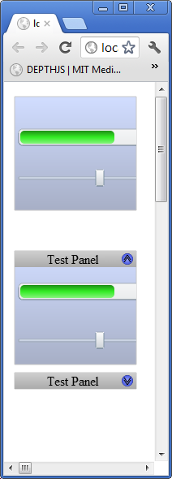
Calender Control :
To add a Calender to your canvas you would make the following JavaScript call from your web page after the canvas element on which you mean to draw the TeeView as follows:
createCalendar(elemId, 10, 750, 358, 408, highestDepth, 'July', '2012', '3 July 2012', 50, 50, 50, '#7979AE', '#bbbbc8', '#202020', 16, '16pt Ariel', '#000000', 12, '12pt Ariel', '#D0D0D0', 12, '12pt Ariel', '#d2d2fd', 12, '12pt Ariel', '#9898b7', '#FFFFFF', 12, '12pt Ariel', '#b4b4ff', '#d3d3fb', null, '#6f7791', 12, '12pt Ariel');
The basic function call for create Calender is:
createCalendar(canvasid, x, y, width, height, depth, visibleMonth, visibileYear, selectedDay, dayCellWidth, dayCellHeight, headerHeight, headerBackgroundColor, bodyBackgroundColor, textHeaderColor, textHeaderHeight, textHeaderFontString, dayDateActiveColor, dayDateActiveTextHeight, dayDateActiveTextFontString, dayDateInactiveTextColor, dayDateInactiveTextHeight, dayDateInactiveTextFontString, selectedDayTextColor, selectedDayTextHeight, selectedDayTextFontString, selectedDayHighLightColor, todayTextColor, todayTextHeight, todayTextFontString, todayHighLightColor, mouseoverHightlightColor, ondayClickFunction, dayLabelTextColor, dayLabelTextHeight, dayLabelTextFontString)
The month and year is supplied as full month name example July and year number example 2012 through the visibleMonth and visibleYear parameters. The selectedDay parameter when supplied will highlight that day on the calender as being selected which changes as the user clicks on a day. The width and height of a day cell is supplied through dayCellWidth and dayCellHeight parameters. The height of the header where the month name and year with buttons is supplied by the headerHeight parameter. dayDateActive... parameters supply the information to draw the dates for days that are in the visible month. dayDateInactive... parameters for those dates on the calender that are not in the visible month. today... parameters supply how to draw today's date. The ondayClickFunction supplies an ability for you to do custom logic when a day is clicked on the calender. dayLabel... parameters supply how to draw the header names of the days example Mon, Tue, etc.
A screenshot of the calender example follows:
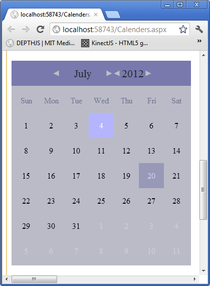
Small calender example javascript:
createCalendar(elemId, 10, 1200, 148, 168, highestDepth, 'July', '2012', '3 July 2012', 20, 20, 20, '#7979AE', '#bbbbc8', '#202020', 8, '8pt Ariel', '#000000', 8, '8pt Ariel', '#D0D0D0', 8, '8pt Ariel', '#d2d2fd', 8, '8pt Ariel', '#9898b7', '#FFFFFF', 8, '8pt Ariel', '#b4b4ff', '#d3d3fb', null, '#6f7791', 8, '8pt Ariel'); A screenshot of the small calender example follows:
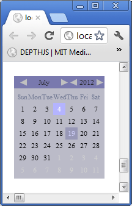
DatePicker Control :
To add a DatePicker to your canvas you would make the following JavaScript call from your web page after the canvas element on which you mean to draw the DatePicker as follows:
createDatePicker(elemId, 10, 700, 148, 20, highestDepth, 'July', '2012', '3 July 2012', 20, 20, 20, '#7979AE', '#bbbbc8', '#202020', 8, '8pt Ariel', '#000000', 8, '8pt Ariel', '#D0D0D0', 8, '8pt Ariel', '#d2d2fd', 8, '8pt Ariel', '#9898b7', '#FFFFFF', 8, '8pt Ariel', '#b4b4ff', '#d3d3fb', null, '#6f7791', 8, '8pt Ariel', '#000000', 12, '12pt Ariel', 168);
The basic function call for create Calender is:
createDatePicker(canvasid, x, y, width, height, depth, visibleMonth, visibileYear, selectedDay, dayCellWidth, dayCellHeight, headerHeight, headerBackgroundColor, bodyBackgroundColor, textHeaderColor, textHeaderHeight, textHeaderFontString, dayDateActiveColor, dayDateActiveTextHeight, dayDateActiveTextFontString, dayDateInactiveTextColor, dayDateInactiveTextHeight, dayDateInactiveTextFontString, selectedDayTextColor, selectedDayTextHeight, selectedDayTextFontString, selectedDayHighLightColor, todayTextColor, todayTextHeight, todayTextFontString, todayHighLightColor, mouseoverHightlightColor, ondayClickFunction, dayLabelTextColor, dayLabelTextHeight, dayLabelTextFontString, textboxAreaTextColor, textboxAreaTextHeight, textboxAreaTextFontString, calenderHeight)
All the parameters are pretty much same as calender control. The difference is the calenderHeight and not height determines the dropdown calender height. The height defines the height of the textbox area and corresponding size of the button which is square. Three new parameters textboxAreaTextColor, textboxAreaTextHeight and textboxAreaTextFontString all define how the text which is the selected date in dd/mm/yyyy format will be drawn.
A screenshot of the datepicker control with the dropdown calender showing is provided below:
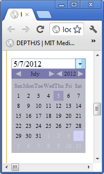
Animated Bar Graph Control :
To add an animated bar graph control to your canvas you would make the following JavaScript call from your web page after the canvas element on which you mean to draw the bar graph as follows:
createBarGraph(elemId, 500, 500, 300, 300, highestDepth, [['GM', 90, '#FF0000'], ['Ford', 80, '#00FF00'], ['Chrysler', 70, '#0000FF']], 100, 5, "Auto Industry %'s", '#000000', 12, '12pt Ariel', 50, '#000000', 10, '10pt Ariel', 50, 20, function (canvasid, windowid, i) { var barGraphProps = getBarGraphProps(canvasid, windowid); alert('You clicked on the bar labeled:: ' + barGraphProps.Data[i][0]); });
The basic function call for creating a bar graph is:
createBarGraph(canvasid, x, y, width, height, depth, data, maxvalue, nummarksy, title, titletextcolor, titletextheigth, titletextfontstring, barwidth, axisLabelsTextColor, axisLabelsTextHeight, axisLabelsTextFontString, marginleft, gapbetweenbars, barClickFunction)
The data parameters is an array of arrays. Each bar is defined by a label, a number and the color of the bar. The maxvalue is the parameter for the maxvalue of the y-axis. The nummarksy is the number of marks on the y-axis. Title parameters supply how to draw the title. The barwidth is the width of each bar drawn per label supplied in the data array. The axislabel... parameters supply how to draw the axis labels and the label inside each bar. The marginleft parameter is how much space to leave to the left of the y-axis. The gapbetweenbars parameter defines the gap between each bar. The barClickFunction allows you to do some custom action when a bar is clicked. In the example it pops up an alert which gives the label text for the bar clicked.
A screenshot of the bar graph example follows:
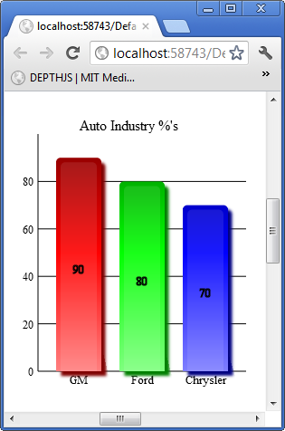
Animated Pie Chart Control :
To add an animated pie chart control to your canvas you would make the following JavaScript call from your web page after the canvas element on which you mean to draw the pie chart as follows:
createPieChart(elemId, 10, 10, 500, 336, highestDepth, [['GM', 50, '#FF0000'], ['Ford', 30, '#00FF00'], ['Chrysler', 20, '#0000FF']], "Auto Industry %'s", '#000000', 10, '10pt Ariel', '#000000', 10, '10pt Ariel', function (c, w, i) { var p = getPieChartProps(c, w); alert("You clicked on slice for " + p.Data[i][0]); });
The basic function call for creating a bar graph is:
createPieChart(canvasid, x, y, width, height, depth, data, title, titletextcolor, titletextheight, titletextfontstring, labeltextcolor, labeltextheight, labeltextfontstring, sliceClickFunction)
The data parameters is an array of arrays. Each pie slice is defined by a label, a number and the color of the pie slice. The actual size radius of the pie is calculated as the height of the control minus the title text height minus two times the label text height minus 24 which is basically a height spacing of four pixels around title and bottom and top possible labels. So if you want a smaller or bigger circle just adjust the height of the window. The slice click function is what is called when the user clicks on a pie slice and you are provided with the canvas id, window id and the index into the data array for which data elements slice was clicked. In the example it pops an alert saying you clicked GM, Ford or Chrysler's pie slice.
A screenshot of the example pie chart follows with no slice selected i.e. clicked on by the user:
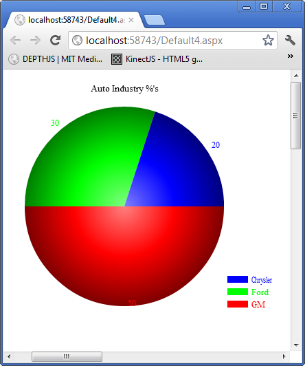
A screenshot follows for the Chrysler pie slice clicked on by the user for the example:
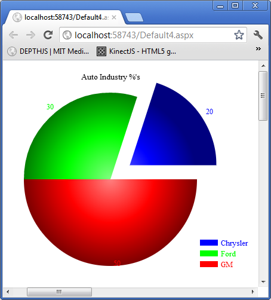
Animated Multi Line Graph Control :
To add an animated multi line graph control to your canvas you would make the following JavaScript call from your web page after the canvas element on which you mean to draw the multi line graph as follows:
createLineGraph(elemId, 10, 550, 400, 336, highestDepth, [[[[10, 80], [20, 50], [30, 75], [40, 34], [50, 20], [60, 80], [70, 68], [80, 90], [90, 45]], '#00FF00'], [[[10, 45], [20, 70], [30, 35], [40, 64], [50, 50], [60, 30], [70, 40], [80, 70], [90, 90]],'#FF0000']], 100, 5, 100, 5, 'Automotive Sales', '#000000', 10, '10pt Ariel', '#000000', 10, '10pt Ariel', function (canvasid1, windowid1, i) { alert(i.toString()); }, 50); createLineGraph(elemId, 550, 10, 400, 336, highestDepth, [[[['A1', 80], ['A2', 50], ['A3', 75], ['A4', 34], ['A5', 20], ['A6', 80], ['A7', 68], ['A8', 90], ['A9', 45], ['A10', 68]], '#00FF00'], [[['A1', 45], ['A2', 70], ['A3', 35], ['A4', 64], ['A5', 50], ['A6', 30], ['A7', 40], ['A8', 70], ['A9', 90], ['A10', 28]], '#FF0000']], 100, 5, 100, 5, 'Automotive Sales', '#000000', 10, '10pt Ariel', '#000000', 10, '10pt Ariel', function (canvasid1, windowid1, i) { alert(i.toString()); }, 50, 1);
The basic function call for creating a multi line graph is:
createLineGraph(canvasid, x, y, width, height, depth, data, xmaxvalue, nummarksx, ymaxvalue, nummarksy, title, titletextcolor, titletextheight, titletextfontstring, axislabelstextcolor, axislabelstextheight, axislabelstextfontstring, clickFunction, marginleft, islabeledxvalues)
The data parameters is an array of arrays. Each line is defined by an array of x, y values and a color of the line. You can provide multiple such sets for multiple lines or just one set for one line. The click function gets a value i which is the index of the line set that was clicked on. So you can execute custom logic depending on which line the user clicks on which is a different data set.
A screenshot for the multi line graph example with last optional parameter missing as this uses numbers and not labels on the xaxis follows:
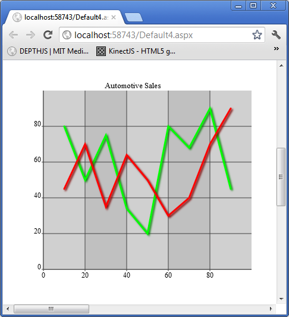
The screenshot for the second example which uses labels on the xaxis so it sets the last optional parameter to 1:
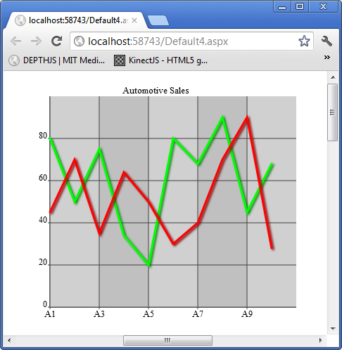
Animated Gauge Chart Control :
To add an animated gauge chart control to your canvas you would make the following JavaScript call from your web page after the canvas element on which you mean to draw the gauge chart as follows:
createGauge(elemId, 10, 950, 350, 350, highestDepth, [0, 100, [0, 30, '#FF0000'], [30, 60, '#FFF000'], [60, 100, '#00FF00'], 10, 5, 80], 'Automotive Efficiency %', '#000000', 16, '16pt Ariel', 150, '#FFFFFF', 10, '10pt Ariel');
createGauge(canvasid, x, y, width, height, depth, data, title, titletextcolor, titletextheight, titletextfontstring, gaugeradius, gaugelabeltextcolor, gaugelabeltextheight, gaugelabeltextfontstring) The data parameter is an array of arrays. The first element in the main array which is 0 in the example is the minimum value and the second which is 100 in the example is maximum value. The second element in the main array is an array which defines the first arc from left which in the case of the example goes from value 0 to 30 and is of color red fill. The third element is an array which defines the second arc on the gauge which is from value 30 to 60 range and is yellow. The next element is again an array defining the last arc which in the example is from value 60 to 100 and is green. The next element in the main array is 10 which is the number of major marks and the next one 5 which draws marks between each major mark. Finally the last element is the value to point at which in the case of the example is 80.
A screenshot of the gauge chart example follows:
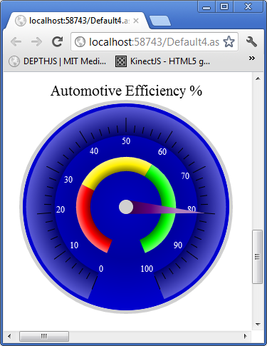
Animated Radar Graph Control :
To add an animated radar graph control to your canvas you would make the following JavaScript call from your web page after the canvas element on which you mean to draw the radar graph as follows:
createRadarGraph(elemId, 400, 950, 350, 400, highestDepth, [10, 20, 30, 40, 50, 60], 60, '#5f69b3', 6, 'Test Radar Graph', '#000000', 16, '16pt Ariel', '#000000', 10, '10pt Ariel');
createRadarGraph(canvasid, x, y, width, height, depth, data, maxvalue, colorstr, nummarks, title, titletextcolor, titletextheight, titletextfontstring, marklabeltextcolor, marklabeltextheight, marklabeltextfontstring) The data parameter is a simple list of numbers which will be drawn out one on each axis per number. The maxvalue parameter should be the maximum value for one axis. The colorstr is the color you want to paint for the radar region.
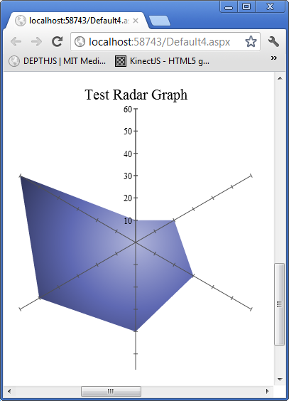
Animated Line Area Graph Control :
To add an animated line area graph control to your canvas you would make the following JavaScript call from your web page after the canvas element on which you mean to draw the line area graph as follows:
createLineAreaGraph(elemId, 1000, 10, 400, 400, highestDepth, [[[10, [20, 30, 10]], [20, [50, 30, 20]], [30, [20, 40, 30]], [40, [10, 20, 40]], [50, [20, 20, 10]], [60, [40, 40, 20]], [70, [50, 10, 10]], [80, [10, 20, 10]], [90, [20, 30, 10]], [100, [40, 20, 10]]], ['#FF0000', '#00FF00', '#0000FF']], 100, 100, 5, 5, 'Regional Sales', '#000000', 16, '16pt Ariel', '#000000', 10, '10pt Ariel', 50);createLineAreaGraph(elemId, 1450, 10, 400, 400, highestDepth, [[['A1', [20, 30, 10]], ['A2', [50, 30, 20]], ['A3', [20, 40, 30]], ['A4', [10, 20, 40]], ['A5', [20, 20, 10]], ['A6', [40, 40, 20]], ['A7', [50, 10, 10]], ['A8', [10, 20, 10]], ['A9', [20, 30, 10]], ['A10', [40, 20, 10]]], ['#FF0000', '#00FF00', '#0000FF']], 100, 100, 5, 5, 'Regional Sales', '#000000', 16, "normal 16px 'Trebuchet MS', Verdana, Arial, Helvetica, sans-serif", '#000000', 10, '10pt Ariel', 50, 1);
createLineAreaGraph(canvasid, x, y, width, height, depth, data, xmaxvalue, ymaxvalue, nummarksx, nummarksy, title, titletextcolor, titletextheight, titletextfontstring, axislabelscolor, axislabelsheight, axislabelsfontstring, marginleft, islabeledonxaxis) The data parameter is an array of arrays which start with the x value and the set of y values for that x value in an array. The limitation that each x must have consistent number of y values. The second element of the main array is a array of colors to be used for the regions and must be the same number of colors as the number of y values per x value. If you want to have labels i.e. text on the x-axis as in the second example then just provide islabeledonxaxis as 1 and if you are providing numbers then don't supply it as all as in the first example which uses numbers on the x-axis.
A screenshot of the example follows for the first example with numbers:
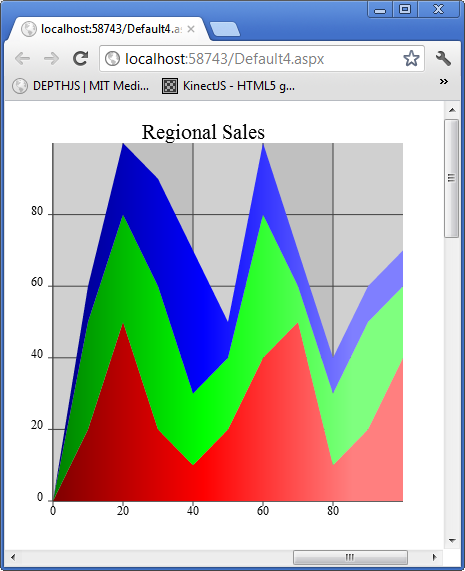
A screenshot follows for the second examples which uses text on the x-axis values:
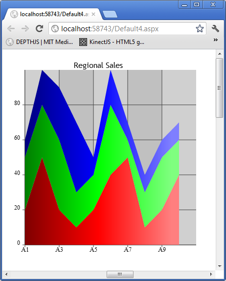
Notice the only difference between the two charts is the labels on the x-axis because the x values are different between the two charts.
Candlesticks Graph Control :
To add a candlesticks graph control to your canvas you would make the following JavaScript call from your web page after the canvas element on which you mean to draw the candlesticks graph as follows:
createCandlesticksGraph(elemId, 1000, 500, 350, 400, highestDepth, [[30, 70, 20, 80], [10, 30, 5, 35], [50, 30, 23, 80]], [[0, 'GM'], [1, 'Ford'], [2, 'Chrysler']], 75, 100, 5, 'Automotive Stocks', '#000000', 16, '16pt Ariel', 20, '#586d8c', '#305791', 50, '#000000', 10, '10pt Ariel');
createCandlesticksGraph(canvasid, x, y, width, height, depth, data, xmarkslabeldata, xmarkswidth, ymaxvalue, nummarksy, title, titlecolor, titleheight, titlefontstring, candlebodywidth, candelbodycolorstr, candellinecolorstr, marginleft, axislabelscolor, axislabelsheight, axislabelsfontstring) The data parameter is an array of arrays in which each array has an open, close, low, high values. If the open value is less than the close value then the candlestick will be filled if not it will be outlined. You can provide a color for the candlesticks.
A screenshot of the example follows:
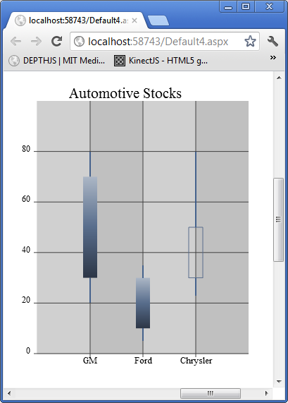
Doughnut Chart Control :
To add a doughnut chart control to your canvas you would make the following JavaScript call from your web page after the canvas element on which you mean to draw the doughnut chart as follows:
createDoughnutChart(elemId, 1000, 950, 450, 450, highestDepth, [['GM', 50, '#FF0000'], ['Ford', 30, '#00FF00'], ['Chrysler', 20, '#0000FF']], "Auto Industry %'s", '#000000', 16, '16pt Ariel', 80, 25, '#000000', 10, '10pt Ariel', 100, 10, '10pt Ariel', function (c, w, i) { var p = getDoughnutChartProps(c, w); alert("You clicked on slice for " + p.Data[i][0]); });
createDoughnutChart(canvasid, x, y, width, height, depth, data, title, titlecolor, titletextheight, titlefontstring, innerradius, marginsides, labelcolor, labelheight, labelfontstring, legendwidth, legendheight, legendfontstring, sliceClickFunction) The data parameter is the same format as it was for pie charts so please reference that. The innerradius parameter defines the inside radius of the hole in the middle. As doughnut chart is essentially a pie chart with a hole in the middle of it. Marginsides is how much space to leave to the right and left of the doughtnut drawing. The legendwidth parameter is how much space on the right side to use for the legend. The sliceClickFunction is raised when the user clicks a slice and the parameters are the same as pie chart.
A screenshot of the example with no slice clicked is shown below:
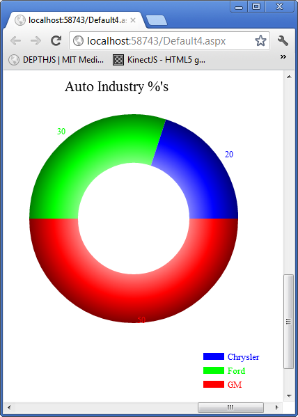
A screenshot of the example with the Chrysler slice clicked is shown below:
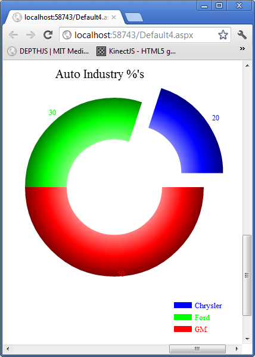
Stacked Bar Chart Control :
To add a stacked bar chart control to your canvas you would make the following JavaScript call from your web page after the canvas element on which you mean to draw the stacked bar chart as follows:
createStackedBarGraph(elemId, 1450, 800, 400, 400, highestDepth, [['GM', [10, '#FF0000'], [20, '#0000FF'], [10, '#00FF00']], ['Ford', [20, '#FF0000'], [10, '#0000FF'], [30, '#00FF00']], ['Chrysler', [32, '#FF0000'], [25, '#0000FF'], [35, '#00FF00']]], 100, 5, 'Stacked Bar Graph', '#000000', 16, '16pt Ariel', 100, 40, '#000000', 10, '10pt Ariel', function (c, w, i) { var p = getstackedBarGraphProps(c, w); alert("You clicked on the " + p.Data[i][0] + " stacked bar!");}, 50);
createStackedBarGraph(canvasid, x, y, width, height, depth, data, maxvalue, nummarksy, title, titlecolor, titleheight, titlefontstring, barwidth, gapbetweenbarssets, axislabelscolor, axislabelsheight, axislabelsfontstring, barClickFunction, marginleft) The data parameter is an array of arrays one per stacked bar starting with the label for that bar and then an array of values which determined the length of the bar versus the maximum value supplied by maxvalue parameter and the color of that bar segment. It is a bit tricky to adjust the width of the bars so what you want to do is if you want a wider bar increase both barwidth and gapbetweenbars parameters whoever always gapbetweenbars should be less than barwidth. In this example the barClickFunction supplied simply gives a message displaying the bar label for the bar that was clicked.
A screenshot of the example follows below:
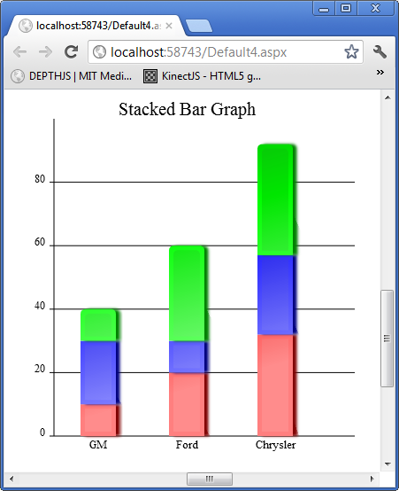
Tab Control :
To add a tab control to your canvas you would make the following JavaScript call from your web page after the canvas element on which you mean to draw the tab control as follows:
var tabwindowid = createTabControl(elemId, 200, 10, 250, 100, highestDepth, ['Tab 1', 'Tab 2', 'Tab 3'], '#000000', 10, '10pt Ariel', '#C0C0C0', '#D0D0D0', 0, null, 1, '#C0C0C0', '#D0D0D0', 0, 3, '#6c6cde', 1);
var tabp = getTabProps(elemId, tabwindowid);
registerChildWindow(elemId, createImage(elemId, 250, 40, 50, 50, highestDepth, 'Madras.png', function () { alert('You clicked Madras.png'); }), tabp.PanelWindowIDs[0]);
registerChildWindow(elemId, createImage(elemId, 250, 40, 50, 50, highestDepth, 'Bombay.png', function () { alert('You clicked Bombay.png'); }), tabp.PanelWindowIDs[1]);
registerChildWindow(elemId, createImage(elemId, 250, 40, 50, 50, highestDepth, 'Pune.png', function () { alert('You clicked Pune.png'); }), tabp.PanelWindowIDs[2]); createTabControl(canvasid, x, y, width, height, depth, tablabels, tablabelcolor, tablabelheight, tablabelfontstring, tablabelgradientstartcolor, tablabelgradientendcolor, panelHasBorder, panelBorderColor, panelHasBackgroundGradient, panelBackgroundStartColor, panelBackgroundEndColor, selectedTabID, gapbetweentabs, selectedtabbordercolor, selectedtabborderlinewidth) The tablabels is an array of strings as each tab must have a name. The number of tabs is the length of the tablabels array in the order specified in the string list. The selectedTabID is the index into the tablabels array for the starting tab.
In the example the first thing you do is save the Window ID of the tab control in the example in a variable called tabwindowid. You then get all the properties of the tab by using getTabProps. Then for each control you want to add to a particular tab you call registerChildWindow. This function takes the canvas id name as first parameter, the second parameter is the Window ID of the child controls window which in the case of the example is a direct call to create an image control and the last parameter is the tablabels array tab index into the PanelWindowIDs property of the tab properties you received. Because each tabs control area is a panel which the tab maintains by changing its hidden status on clicking the tab label header. In the case of the example you can check that only the image for that particular tab is shown plus when clicked it gives the correct alert for the image clicked on the tab control.
A screenshot of the example follows below:
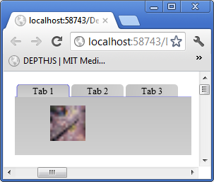
Image Map Control :
To add a image map control to your canvas you would make the following JavaScript call from your web page after the canvas element on which you mean to draw the image map control as follows:
createImageMapControl(elemId, 250, 150, 200, 150, highestDepth, 'indiamap.gif', [[134, 261, 10, '#00FF00'], [219, 291, 7, '#FF0000'], [248, 361, 10, '#0000FF']], function (c, w, i) { alert("You clicked on " + (i == 0 ? "Mumbai" : (i == 1 ? "Hyderabad" : "Chennai"))); }, 1, 90, 240, 1, 0.1); createImageMapControl(canvasid, x, y, width, height, depth, imgurl, pinxys, pinClickFunction, hasZoom, imagetopleftxoffset, imagetopleftyoffset, scale, scaleincrementfactor) The first thing of course is to supply a url to load the image from. In this case I use an India map since I am from that country however you can use any image does not have to be a map that you need to put pins or pan and zoom. The pinxys is an array in which each element of the array is [x, y, radius, color]. The x and y is relative to the top left corner of the image being 0, 0. You can use Gimp or any image manipulation software to find the x, y pixel co-ordinates within the image to supply for each point you want a pin. The radius is of course the radius of the pin to be drawn at that x, y co-ordinate on the image. The pinClickFunction is invoked when the user clicks a pin and you are supplied with the standard canvas id and window id and an index i into the pinxys array. In the case of the example I make it simple by just saying the name of the city whose pin you clicked on. If hasZoom is 1 then you will be able to zoom in and out with the mouse wheel. This will work with any browser such as google chrome which supports onmousewheel event which is what I use. The imagetopleftxoffset and imagetopleftyoffset is the point on the image to start showing the portion of the image in the window at startup. Again it follows the rules of pinxys co-ordinates. Scale is whatever scale you want to startup with if the scale is too small or your starting window into the image is off image you will not see an image at all so be careful and pick meaningful values i.e. ones which will crop a portion on the image without going off it. The scaleincrementfactor is by how much per mouse wheel move do you want to zoom in and out so in the example I choose 0.1 so it scales slowly on mousewheel as my image for the example is not very large.
A screenshot of the example follows below:
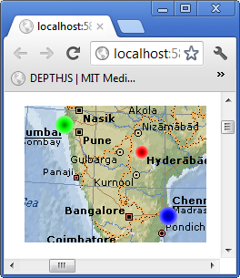
Image Map Control :
To add a menu bar control to your canvas you would make the following JavaScript call from your web page after the canvas element on which you mean to draw the menu bar control as follows:
createMenuBarControl(elemId, 'mb1', 0, 0, 800, 20, highestDepth, [['File', '#000000', 10, '10pt Ariel', 0, null, [['Save', '#000000', 10, '10pt Ariel', 0, function () { alert('You choose Save from the menu.'); }, null], ['Save As', '#000000', 10, '10pt Ariel', 0, function () { alert('You choose Sava As from the menu'); }, null], ['Options', '#000000', 10, '10pt Ariel', 0, null, [['Advanced', '#000000', 10, '10pt Ariel', 0, function () { alert('You choose Advanced from the menu'); }, null], ['Configuration', '#000000', 10, '10pt Ariel', 0, function () { alert('You choose Configuration from the menu'); }, null]]]]], ['Help', '#000000', 10, '10pt Ariel', 0, function () { alert('You choose Help from the menu'); }, null]], '#bec7ff', '#848ec9', '#515eac', '#e3e7ff', '#c5cdff', 0); createMenuBarControl(canvasid, controlNameId, x, y, width, height, depth, data, barcolorstart, barcolormiddle, barcolorend, dropdowncolorstart, dropdowncolorend, orientation) The data format is complex because each item in the menu's text can be configured to any font and size specification. Basically each menu item is defined as an array whose first element is the text label to display in the menu. The second element is the color of the text. The third element is the height of the text. The fourth element is the font specification. The fifth element always set it to 0 as it is used internally by the code to determine if the menu items sub menu if any is to be displayed. The fifth element is the function to invoke when the user clicks the menu item. The sixth and final element is an array of the same menu item element arrays as defined here. If the item has no sub menu with child menu items then set this sixth parameter to null. The orientation parameter is not implemented as yet but that allows for menu bars on the bottom and sides when implemented.
A screenshot of the example menu bar with a sub menu item clicked on is shown below:
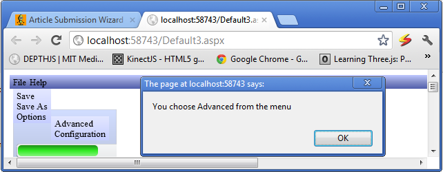
Example of a customized ComboBox Control with Pictures in the dropdown :
The following HTML creates an example of a ComboBox control with pictures in the dropdown area:
<canvas id="canvas1" width="500" height="500" tabindex="0"></canvas>
<script type="text/javascript">
registerCanvasElementId('canvas1');
createComboBox('canvas1', 10, 10, 150, 20, highestDepth, ['Bombay', 'Pune', 'Madras', 'Delhi'], null, null, drawListAreaCustom, null,
listAreaCustomClickFunction, '#364635', 10, '10pt Ariel', '#1b213b', 10, '10pt Ariel');
draw('canvas1');
function drawListAreaCustom(canvasid, windowid) {
var comboboxProps = getComboboxPropsByListAreaWindowId(canvasid, windowid);
var vscrollBarProps = getScrollBarProps(canvasid, comboboxProps.VScrollBarWindowID);
var ctx = getCtx(canvasid);
ctx.fillStyle = '#FFFFFF';
ctx.beginPath();
ctx.rect(comboboxProps.X, comboboxProps.Y + comboboxProps.Height, comboboxProps.Width - 15, 100);
ctx.fill();
ctx.fillStyle = comboboxProps.ListAreaTextColor;
ctx.font = comboboxProps.ListAreaFontString;
for (var i = vscrollBarProps.SelectedID; i < comboboxProps.Data.length && ((comboboxProps.ListAreaTextHeight + 10) *
(i - vscrollBarProps.SelectedID + 1)) + 4 < 100; i++) {
switch (comboboxProps.Data[i]) {
case 'Bombay':
drawCustomImage(ctx, comboboxProps.X, comboboxProps.Y + 4 +
((comboboxProps.ListAreaTextHeight + 10) * (i - vscrollBarProps.SelectedID + 1)), 16, 16, 'Bombay.png');
break;
case 'Pune':
drawCustomImage(ctx, comboboxProps.X, comboboxProps.Y + 4 +
((comboboxProps.ListAreaTextHeight + 10) * (i - vscrollBarProps.SelectedID + 1)), 16, 16, 'Pune.png');
break;
case 'Madras':
drawCustomImage(ctx, comboboxProps.X, comboboxProps.Y + 4 +
((comboboxProps.ListAreaTextHeight + 10) * (i - vscrollBarProps.SelectedID + 1)), 16, 16, 'Madras.png');
break;
case 'Delhi':
drawCustomImage(ctx, comboboxProps.X, comboboxProps.Y + 4 +
((comboboxProps.ListAreaTextHeight + 10) * (i - vscrollBarProps.SelectedID + 1)), 16, 16, 'Delhi.png');
break;
}
ctx.fillText(comboboxProps.Data[i], comboboxProps.X + 20, comboboxProps.Y + 17 +
((comboboxProps.ListAreaTextHeight + 10) * (i - vscrollBarProps.SelectedID + 1)));
}
ctx.strokeStyle = '#b7bfc8';
ctx.beginPath();
ctx.rect(comboboxProps.X, comboboxProps.Y + comboboxProps.Height, comboboxProps.Width - 15, 100);
ctx.stroke();
}
var preloadedImages = new Array();
function drawCustomImage(ctx, x, y, width, height, src) {
for (var i = 0; i < preloadedImages.length; i++) {
if (preloadedImages[i].Src == src) {
ctx.drawImage(preloadedImages[i].Image, x, y);
return;
}
}
var image = new Image(width, height);
image.src = src;
image.onload = function () {
preloadedImages.push({ Src: src, Image: image });
ctx.drawImage(image, x, y);
};
}
function listAreaCustomClickFunction(canvasid, windowid) {
var comboboxProps = getComboboxPropsByListAreaWindowId(canvasid, windowid);
var vscrollBarProps = getScrollBarProps(canvasid, comboboxProps.VScrollBarWindowID);
var canvas = getCanvas(canvasid);
var x = event.pageX - canvas.offsetLeft;
var y = event.pageY - canvas.offsetTop;
for (var i = vscrollBarProps.SelectedID; i < comboboxProps.Data.length &&
((comboboxProps.ListAreaTextHeight + 10) * (i - vscrollBarProps.SelectedID + 1)) < 100; i++) {
if (x > comboboxProps.X && y > comboboxProps.Y + 4 + comboboxProps.Height +
((comboboxProps.ListAreaTextHeight + 10) * (i - vscrollBarProps.SelectedID)) &&
x < comboboxProps.X + comboboxProps.Width - 15 && y < comboboxProps.Y +
comboboxProps.Height + 4 + ((comboboxProps.ListAreaTextHeight + 10) *
(i - vscrollBarProps.SelectedID + 1))) {
comboboxProps.SelectedID = i;
setHiddenWindowStatus(canvasid, comboboxProps.VScrollBarWindowID, 1);
setHiddenWindowStatus(canvasid, comboboxProps.ListAreaWindowID, 1);
draw(canvasid);
return;
}
}
}
</script>
The above JavaScript uses 4 images by the name of Bombay.png, Pune.png,
Madras.png, Delhi.png. You can use any images with different file names
long as you change the image URLs in the switch case statement in function
drawListAreaCustom.
A screenshot of the above example follows:
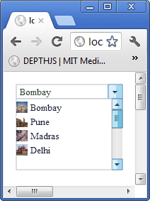
How to use the new Forms Based System :
The current concept on how forms work with web pages is that when you click for example a button that requires a post back to do something on the server side what will happen with regular web page technology is that all the controls values will be sent to the server plus in the case of ASP.NET viewstate the state of the controls as well. The control values will be unwrapped by the PHP or ASP.NET module and a php or aspx server side page and function will be invoked in which your code will make some changes. Then a whole new web page is sent back to the client web browser.
In this new system I have invented what happens is that when you do something with a control for example a button that requires some code to be executed on the server side all the controls state and values are wrapped up and sent across to the server side in an AJAX call which goes to an ASP.NET web page which has included the CanvasControlLibrary.cs file that has all the support. Your C# function whose name you provide is invoked you make all the changes to the control values and states in the example change the text of a label. Then all the controls state and values are wrapped up in XML and sent back to the same page the client browser is on since its an AJAX call and then unwrapped replacing all the old values of the control states and values with the new ones you changed server side. The UI is redrawn and the changes you made to the controls reflected on the same web page. The client never leaves the web page on a post back to the server side to go to another web page which is the normal practice.
So here is the client side code which is a button that invokes a server side C# function on an aspx page:
createLabel(elemId, 'l1', 150, 10, 100, 20, 'Label 1', '#000000', 12, '12pt Ariel', null, highestDepth); createButton(elemId, 'b3', 30, 74, 250, 40, 'Custom Click Function', '#0000FF', 12, '12pt Ariel', 2, highestDepth + 1, function (canvasid, windowid) { invokeServerSideFunction('AjaxEx1.aspx', 'ClickMe', elemId, windowid, function () { alert('Did Postback'); }); }, null, '#bee6fd', '#a7d9f5', '#eaf6fd', '#d9f0fc', '#3c7fb1');
The code on the server side is pretty simple and follows below:
public partial class Default2 : System.Web.UI.Page
{
CanvasControlLibrary ccl;
protected void Page_Load(object sender, EventArgs e)
{
ccl = new CanvasControlLibrary(Request.InputStream);
ccl.InvokeServerSideFunction(this.Page);
ccl.SendVars(Response.OutputStream);
}
protected override void Render(HtmlTextWriter writer)
{
}
public void ClickMe(string canvasid, int windowid)
{
CanvasControlLibrary.CCLLabelProps lp = ccl.getControlPropsByControlNameID("l1") as CanvasControlLibrary.CCLLabelProps;
lp.Text = "Did Postback";
}
}
The label declaration in javascript function call is normal. The button on the other hand when it is clicked calls a javascript function called invokeServerSideFunction in which all the magic of a post back happens. The function first parameter is the name of web page on which your server side code is at. The next is the name of the function on the aspx page to invoke server side. The third and fourth parameters are just the canvas id and the window id to identify on the server side which control raised the event on the client side. The fifth is a javascript function which you code that will be invoked after the post back is completed so you can make further changes on the client side if you wish.
On the server side aspx page in your page load event you have call the server side class and then after it is instantiated invoke the server side function which is the ClickMe C# function on the page. In this example a simple call to get the label control and change its text value to Did Postback. Then you invoke the canvas control library server side class to send all your changes back to the client.
When you download and run the example on clicking the button the label is changed server side from showing text Label 1 to Did Postback. I have kept the example very simple but with this system you can create fully functional pages. In the case of wanting forms all you do is have a startup panel with your controls on it. When you click the button and submit all the information gathered you keep a second panel with all the controls on it which is the form you show and hide the first form. With this ability you can build fully functional web pages with server side post back custom code and build any current form based web pages in the new Canvas Control Library.
A diagram of the basic concept of the system follows below:
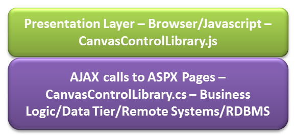
Supports the following Browsers:
Latest version as of 6th August 2012 of Google Chrome, Safari, Opera, Maxthon are supported. For a easy visual summary the icons of the supported browsers is shown below:
Note to Readers:
I am continuously working on this so please keep checking up on the article or subscribe to it. There is going to be a lot more. Also as it is very hard work I would appreciate positive comments if you like and it and use it as it is free to use without any warranty or liability on my behalf. If you have any questions regarding how to do something custom which is not provided please email me at akshay.srin@gmail.com and I will answer as soon as I read it. Hope you enjoy the work and build better looking and fancier web pages with it and make bring a better web browsing experience to you and me and all the world.